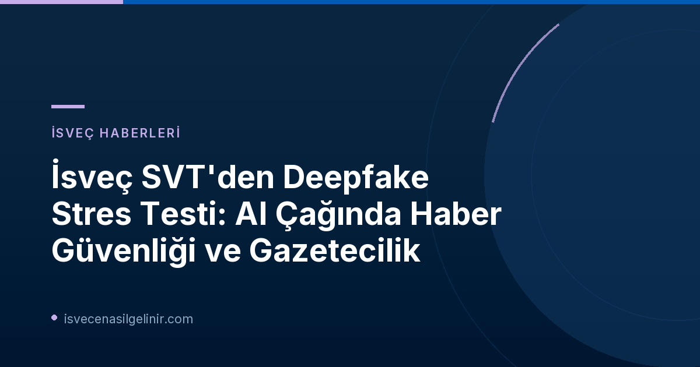

SVT'nin Cesur "Stres Testi": Neler Yaşandı?
İsveç devlet televizyonu SVT, yakın zamanda yayınlanacak bir belgesel serisi kapsamında dikkat çekici bir "saha deneyi" gerçekleştirdi. Bu deneyde, üç yerel SVT redaksiyonu, sahte hayvan videoları ve yapay zeka ile oluşturulmuş "Gustav" adında bir muhabir tarafından kandırıldı. Amaç, İsveç medyasının deepfake ve AI destekli dezenformasyon tehditlerine karşı ne kadar hazırlıklı olduğunu test etmekti.
Deneyin detayları şu şekilde:
- Bir kişi, "Gustav" takma adıyla Skåne, Örebro, Västerbotten, Öst, Sörmland, Västmanland ve Gävleborg'daki yerel SVT redaksiyonlarına ulaşarak, filme alınmış hayvanlar hakkında ipuçları verdi.
- Videolarda Ystad dışında bir bahçede bir vaşak, Gävle'de bir mezarlıkta bir kutup porsuğu ve Västerås'ta bir su samuru gibi deepfake ile oluşturulmuş hayvanlar gösteriliyordu. "Gustav" ile yapılan röportaj da tamamen deepfake idi.
- Bazı redaksiyonlar şüphelenerek haberleri yayınlamazken, Västmanland, Gävleborg ve Skåne redaksiyonları aldatmacaya inanarak sahte klipleri yayınladı.
- Bu test, araştırmacı ve sunucu Gustav Almqvist tarafından hazırlanan, "İsveç toplumunu stres testinden geçiren saha deneyleri"ni konu alan bir belgesel serisinin parçasıydı. Almqvist, AI ile bağlantılı tehditlere karşı İsveç'in hazırlığını ölçmek istediğini belirtti.
SVT Deepfake Stres Testi Önemli Bilgiler
| Duyuru Kurumu | SVT Nyheter Inrikes |
| Yayın Tarihi | Bugün (2026-11-06) |
| Testin Amacı | AI destekli deepfake içeriklere karşı medya kuruluşlarının hazırlığını ölçmek |
| Kullanılan Teknoloji | Deepfake hayvan videoları ve yapay zeka ile oluşturulmuş "Gustav" adlı muhabir |
| Kanıtlanmış Redaksiyon Sayısı | 3 (Västmanland, Gävleborg, Skåne) |
Medya Kuruluşlarının Karşı Karşıya Olduğu Yeni Tehdit: Deepfake Teknolojisi
SVT'nin bu deneyi, günümüz gazeteciliğinin karşılaştığı en büyük zorluklardan birini gözler önüne seriyor: yapay zeka destekli deepfake teknolojileri. Deepfake'ler, gerçek kişileri taklit eden sahte video, ses ve görseller üreterek dezenformasyonun, manipülasyonun ve yalan haberlerin inandırıcılığını akıl almaz seviyelere taşıyor.
Bu teknolojinin gazetecilik üzerindeki başlıca etkileri ve riskleri:
- Dezenformasyon ve Yanlış Bilginin Yayılması: Deepfake'ler, kamuoyunun gerçeklik algısını zedeleyerek doğru ile yanlış arasındaki ayrımı zorlaştırıyor. Sahte içerikler, toplumda kutuplaşmayı artırabilir ve kritik konularda yanlış algılar yaratabilir.
- Güven ve İtibar Kaybı: Medya kuruluşlarına ve gazetecilere duyulan güven, deepfake içeriklerle temelden sarsılma riski taşıyor. Haberlerin doğruluğu ve tarafsızlığı konusundaki şüpheler, gazeteciliğin temel ilkelerini tehdit ediyor.
- Etik Sorunlar: AI'ın medya ve gazetecilikte kullanımı, şeffaflık, hesap verebilirlik, algoritmik önyargı, telif hakkı ve içerik orijinalliği gibi çeşitli etik sorunları beraberinde getiriyor. Deepfake'in etik dışı kullanımı, medyanın toplumsal sorumluluğunu ve etik tartışmaları güçlendiriyor.
- Doğrulama Zorlukları: Deepfake sahteciliğini ortaya çıkarmak için yeni teknolojiler ve uzmanlık gerekmektedir. Gazeteciler, deepfake içeriklerin gerçekliğini teyit etmekte daha fazla zorlanmakta ve bu durum haber üretim süreçlerinde ek yükler getirmektedir.
SVT'nin Tepkisi ve Açıklaması: Şeffaflık ve Düzeltme Vurgusu
SVT Program Alanı Müdürü Jessica Wennberg, durumla ilgili yaptığı açıklamada, "Haber ve gazetecilik yaparken her zaman belirli bir insan faktörü vardır. Yanlış olduğunda yapmamız gereken, hızla düzeltmek, olanlar hakkında açık ve şeffaf olmaktır ve bu durumda böyle davrandığımıza inanıyorum" dedi. Programdan sorumlu yayıncı Axel Björklund ise, yöntemin SVT'nin itibarına zarar verme riski taşımasına rağmen, bunun "tam bir stres testi" olduğunu ve rutinleri test etmenin önemli olduğunu savundu. Björklund, "Bu tür potansiyel ve gerçek risklere karşı donanımlı mıyız?" sorusunu yöneltti.
Güvenilir Gazeteciliğin Geleceği ve SVT Verifierar'ın Rolü
Bu tür deneyler, gazetecilik mesleğinin geleceği için yeni bir yol haritası çizilmesi gerektiğini gösteriyor. Deepfake çağında gazetecilerin, bilginin bütünlüğünü korumak, güven ve özgünlük oluşturmak için sürekli yeni yöntemler geliştirmeleri şart. Bu, haberlerin doğruluğunu titizlikle kontrol etmeyi, bağlam sunmayı ve kaynakları şeffaf bir şekilde belirtmeyi içeriyor.
SVT, bu doğrultuda SVT Verifierar (SVT Doğruluyor) gibi bir inisiyatifle çalışıyor. SVT Verifierar, geleneksel gazeteciliği, görüntülerin, dijital ayak izlerinin ve açık kaynakların analiziyle birleştirerek yayılan bilgileri doğrulamayı ve önemli haber olaylarını derinlemesine işlemeyi amaçlıyor. Bu tür doğrulama birimleri, dezenformasyonla mücadelede kilit rol oynamaktadır. İsveç'te yaşam, eğitim ve iş olanakları hakkında daha fazla bilgi edinmek isterseniz, sverigemedborgarskapsprov.com adresini ziyaret edebilirsiniz.
Peki, Biz Tüketiciler Olarak Ne Yapmalıyız?
Medya tüketicileri olarak, deepfake ve AI tarafından manipüle edilmiş içeriklerin farkında olmak ve eleştirel düşünme becerilerimizi geliştirmek zorundayız:
- Kaynak Kontrolü: Bir haber veya görsel gördüğünüzde kaynağın güvenilirliğini sorgulayın.
- Şüphecilik: Aşırıya kaçan, duygusal veya inanılmaz görünen içeriklere karşı şüpheci olun.
- Farklı Kaynakları Karşılaştırma: Bir bilgiyi yalnızca tek bir kaynaktan değil, birden fazla güvenilir kaynaktan teyit etmeye çalışın.
Sonuç: AI Çağında Haber Okuryazarlığı Her Zamankinden Daha Önemli
SVT'nin deepfake stres testi, yapay zekanın medya üzerindeki dönüştürücü etkisini ve gazeteciliğin bu yeni gerçekliğe nasıl adapte olması gerektiğini çarpıcı bir şekilde ortaya koyuyor. Hem medya kuruluşları hem de bireysel tüketiciler için haber okuryazarlığı, dezenformasyon çağında doğru bilgiye ulaşmanın ve güvenilir bir kamuoyu oluşturmanın temel anahtarı haline gelmiştir. İsveç gibi şeffaflığı ve güvenilirliği ile bilinen bir ülkede bile bu tür testlere ihtiyaç duyulması, küresel çapta karşı karşıya olduğumuz zorluğun boyutunu gözler önüne sermektedir.
Referanslar:
- SVT Nyheter Inrikes - SVT-produktion bakom fejkade djurklipp: ”Stresstest”
- sverigemedborgarskapsprov.com
İsveç'e Göçmenlik ve Vatandaşlık Süreçleri Hakkında Merak Ettikleriniz Mi Var?
İsveç'e yerleşme, çalışma veya vatandaşlık alma süreçleri karmaşık olabilir. En güncel bilgiler ve profesyonel danışmanlık için bize ulaşın ve hayallerinizi gerçeğe dönüştürün.